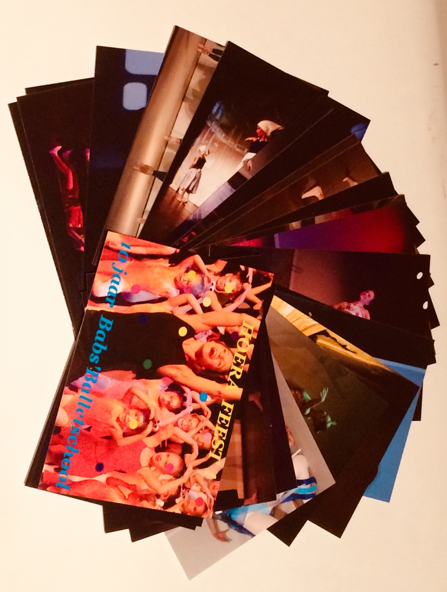
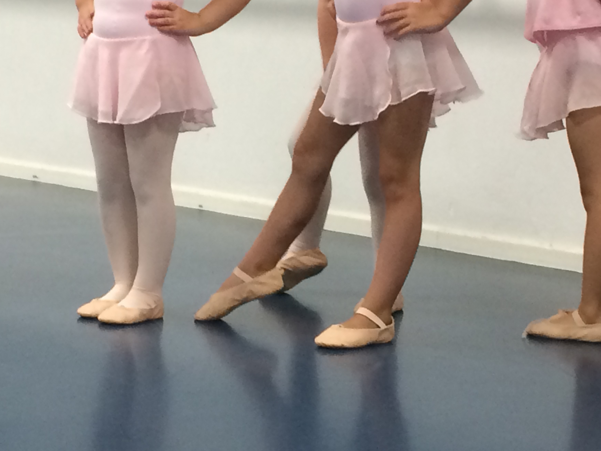
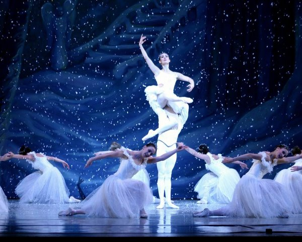

Hoera! Feest!
Dit seizoen is een heel feestelijk seizoen omdat we 10 jaar bestaan! zoals je ziet hebben we niet alleen een nieuwe website maar ook een nieuwe naam! Dit seizoen staat de grote voorstelling weer op het programma op 15 juni 2019 en we sluiten het seizoen af met een dansfeest! Houdt de website of facebook in de gaten voor alle nieuwtjes.

Kado tips:
een kaarten set van de afgelopen 10 jaar voorstellingen! € 10,- per set. 
Ter gelegenheid van het 10 jarig bestaan kun je nu ook een jubileum t-shirt of hoodie met rits van de balletschool bestellen.
Verkrijgbaar in zwart in diverse maten.
bestel via babs@babsballetschool.nl

Rooster 2018-2019
rooster voor 2018-2019.
 Instromen in seizoen 2018/2019 is nog mogelijk, schrijf in via het online inschrijfformulier. inschrijfformulier.
Instromen in seizoen 2018/2019 is nog mogelijk, schrijf in via het online inschrijfformulier. inschrijfformulier.
Gratis Proefles
 ook een keer proberen hoe leuk dansen is? Vraag informatie op voor de geschikte les bij babs@babsballetschool.nl en doe een vrijblijvende proefles.
Kerstlessen 
In de week van 17 t/m 23 december sluiten we 2018 af met een dansles in Kerstsfeer. Wij doen de Kerst lichtjes aan, doen jullie je mooiste tenue aan?
Kerstvakantie 
van 24 december 2018 t/m 4 januari 2019 is het Kerstvakantie. Er zijn dan geen lessen. wij wensen iedereen fijne feestdagen en een heel dansant 2019!
 ⬆⬆⬇⬇⬅➡⬅➡ ba
⬆⬆⬇⬇⬅➡⬅➡ ba